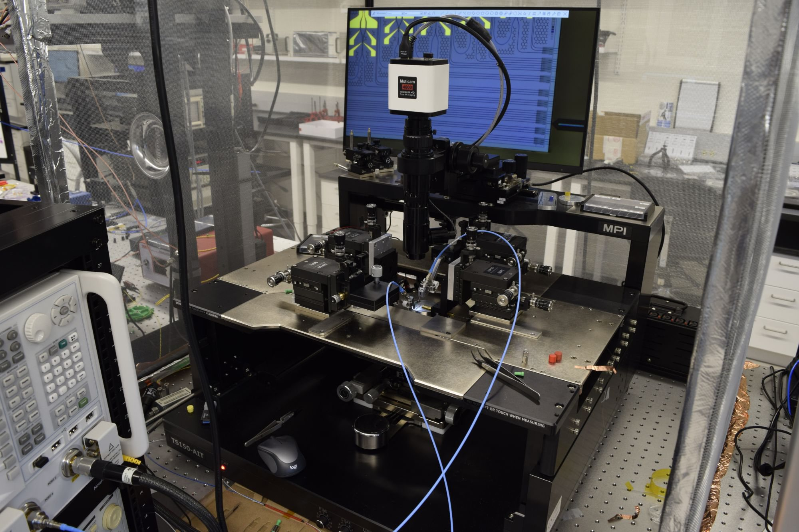
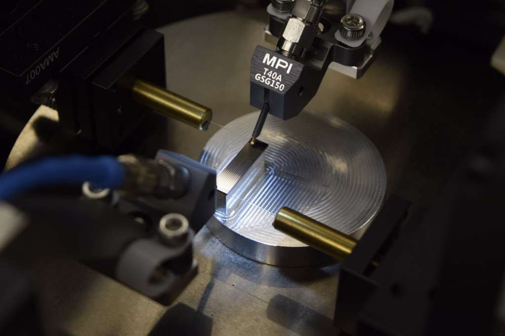

Microwave & Photonics Lab Colorado School of Mines
Our lab brings microwave and photonic test benches together. We measure from DC to 50 GHz, with vector network analysis to 43.5 GHz and spectrum analysis to 50 GHz, and reach further with mm-wave waveguide hardware and absolute power metrology up to 3 THz. On the optical side we run ultra-low-noise and narrow-linewidth lasers, quantum-limited photoreceivers and high-speed electro-optic devices, and two wedge wire bonders and an in-house fiber-to-PIC packaging station handle assembly. Our probe station provides mm-wave and photonics on-wafer probing, combining RF probing and fiber edge-coupling of photonic chips at the same time.


DC to 50 GHz · on-wafer and connectorized
Waveguide hardware and power metrology up to 3 THz
Lasers, detection, modulation and fiber coupling
Wire bonding and fiber-to-PIC packaging
Bench instruments, cables and adapters
Simulation suites · workstations · in-house tools
Contact